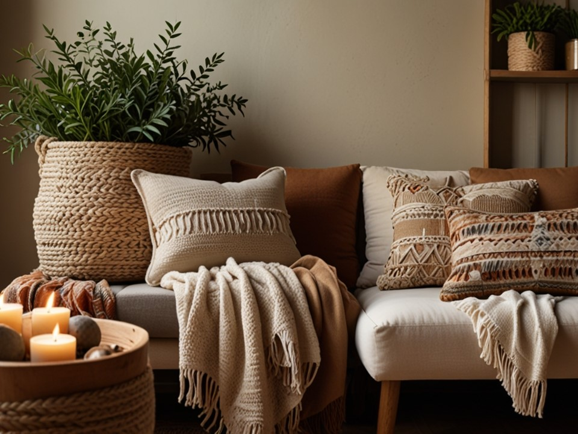

Creating a Cozy Corner: Handmade Decor Ideas
A cozy corner invites relaxation—a place for a book or a warm drink. Handcrafted touches like soft blankets and candles can transform any space. Layer textures with throws and unique items to make it personal. These elements create an inviting sanctuary for slowing down and savoring moments.